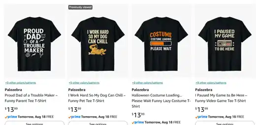

Diseño
Palozebra
Apparel
Ideas gráficas convertidas en camisetas y productos publicados.
Diseño que termina en producto.
Una colección de camisetas desarrollada bajo Palozebra, desde la idea y la gráfica hasta la publicación del producto en un marketplace internacional.
El proyecto explora mensajes, humor, cultura digital y composición tipográfica pensando desde el inicio en cómo funcionará la pieza sobre una prenda real.
Producto publicado
Del archivo a la tienda.
Los diseños fueron preparados y llevados a producto comercial, no solo presentados como mockups.

El proceso
Diseñar pensando en el soporte.
ConceptoUna idea clara que pueda leerse y entenderse rápidamente.
DiseñoTipografía, ilustración y composición adaptadas a una prenda.
PublicaciónPreparación del arte y creación del producto para venta online.
La idea
Una gráfica no termina en la pantalla.
Puede convertirse en objeto, producto y parte de una marca.